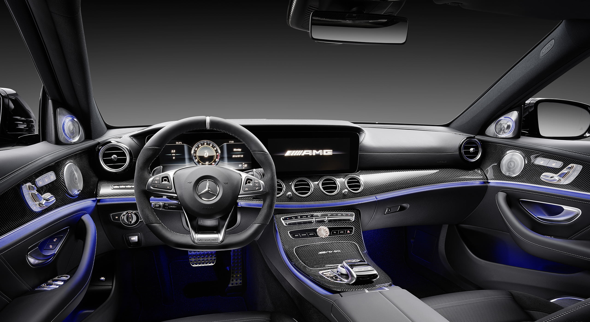

Mercedes-AMG E63 S is a high-performance variant of the Mercedes-Benz E-Class. It's worth noting that specific details and features may vary across model years
The Mercedes-AMG E63 S is known for its potent engine. As of my last update, it commonly comes equipped with a handcrafted AMG 4.0-liter V8 biturbo engine. This engine is capable of producing substantial horsepower and torque figures, contributing to impressive acceleration and high-speed performance.
The E63 S AMG often features a high-performance AMG SPEEDSHIFT MCT (Multi-Clutch Technology) transmission, providing quick and precise gear changes. The 4MATIC+ all-wheel-drive system is a notable feature, offering improved traction and handling, especially during acceleration.
With its powerful engine, the E63 S AMG is known for its quick acceleration. It can achieve high speeds in a relatively short period, making it a thrilling and exhilarating driving experience.
The car typically features an AMG-tuned suspension system that balances sporty handling with comfort. Adjustable suspension settings and multiple driving modes allow the driver to tailor the car's dynamics to their preferences and driving conditions.
The exterior design of the E63 S is typically characterized by sporty and aggressive styling. Features such as a distinctive grille, larger wheels, aerodynamic elements, and AMG badging contribute to its athletic appearance.
Inside, the E63 S AMG usually boasts a luxurious and well-appointed interior. Premium materials, advanced technology features, and comfortable seating contribute to a high-end driving experience. The latest infotainment systems, connectivity features, and driver-assistance technologies are often integrated into the interior.